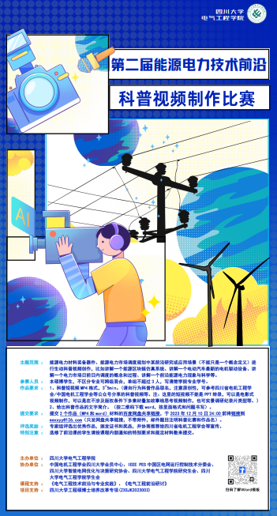

学院通知 · 竞赛比赛
第二届能源电力技术前沿科普视频制作活动成功举办
发布时间：2023-12-15
为把握双碳目标下科技创新的前沿动态，开阔学生眼界，培养电气、能源和计算机多学科融合的思维模式，整合《电气工程前沿研讨》、《电气工程技术前沿与专业实践》课程资源，学院举办第二届能源电力技术前沿科普视频制作比赛。 本次比赛以录制、剪辑技术前沿视频作品为参赛形式，视频制作过程中，同学们兼顾科普性与前瞻性，同时充分发挥团队协作的精神，制作了包含贴图、动画、学术汇报、真人实录等不同风格的作品，作品紧跟时代发展，贴近专业前沿，充分展现了同学们对学术前沿方向和领域的强烈兴趣和奇思妙想。截至12月10日，共收到46部作品。最终，根据专家打分综合评定，结果如下表所示。 作品题目 小组成员 奖项 梯级抽蓄水电站的可持续能源之旅 许刘超、徐航、张灿、姜山 一等奖 新能源电动汽车科普 熊志强、许昊天、金虹羽 输电线路如何应对冰雪灾害 谢婧怡、罗梁骁、张杰 二等奖 电动汽车三大系统科普 卓江华、吕智勇、张颢严 飞轮储电介绍 马世宇、刘禹盟、郑蕉雨、金文杰、董政源 风力发电科普 孙清洁、蒋富强、唐佳飞、邹育霖 虚拟电厂如何创新电力服务新模式 王兴铭、刘嘉文 三等奖 有源电力滤波器-制造类企业的专属电力医生 曹添、苏苗红、袁梦、吴家宝、史绍欣 V2G技术——电网与用户的双赢 郑秀娴、梁泷旑、乔文琪 法国电力系统的改革与启示 张良、苏子恒、李文超、钱超、王剑 虚拟电厂的发展背景及基本原理 熊文杰、赵军、高延冰、胡成彬 新型电力系统下的需求响应 陈亮、何为、卢泓旭、尹伯阳 此次活动展现了同学们对能源与电力方面的新理念、新技术、新装备和新材料等方面的独特见解，同时也达到了以赛促学的目的。相信同学们会以更加浓厚的兴趣关注学科前沿，认知并努力解决能源电力面临的新问题，成长为能源电力行业的栋梁之才。
